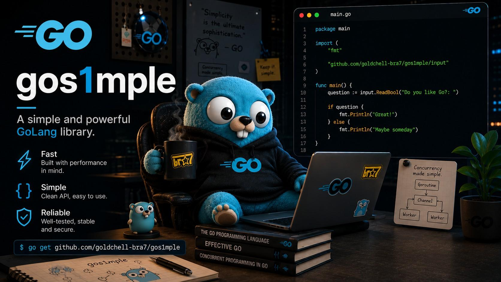

Console Apps
Made Simple
A lightweight Go library that simplifies console applications with easy input handling, text formatting, and colorful terminal output.

Usage Examples
Get up and running in seconds. Here are a few examples showing the core functionality of gos1mple.
Reading User Input
Use the input package to easily read typed values from the console.
package main
import (
"fmt"
"github.com/goldchell-bra7/gos1mple/input"
)
func main() {
age := input.ReadInt("Age: ")
fmt.Println(age)
}Text Formatting
Create headers, separators, and styled text with the text package.
package main
import (
"fmt"
"github.com/goldchell-bra7/gos1mple/text"
)
func main() {
fmt.Println(text.Bold("Hello"))
fmt.Println(text.Cursive("Hello"))
fmt.Println(text.Underline("Hello"))
fmt.Println(text.Strike("Hello"))
}Colorful Output
Apply colors to your terminal output effortlessly with the color package.
package main
import (
"fmt"
"github.com/goldchell-bra7/gos1mple/color"
)
func main() {
fmt.Println(color.Term("Red", color.Red))
fmt.Println(color.Term("Green", color.Green))
fmt.Println(color.Term("Blue", color.Blue))
fmt.Println(color.Term("Cyan", color.Cyan))
}API Overview
gos1mple is organized into three clean packages, each handling a specific aspect of console applications.
input
Read integers, floats, strings, and booleans from the console with simple one-line function calls.
8 Functionstext
Format your terminal output with headers, separators, bold, italic, underline, and strikethrough text.
6 Functionscolor
Colorize terminal text with 24 built-in ANSI color constants including standard, bright, and background fills.
1 Function + 25 Constants